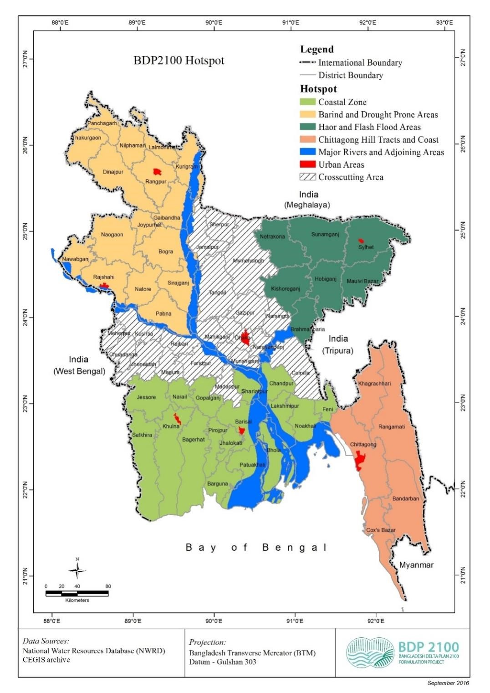

Main strategies under BDP 2100
Strategies developed at 3 levels:
- Strategies conducive for economic development without hampering Environmental sustainability
- Developing Climate change resilient Bangladesh through optimal use of natural resources and ensure water availability by balancing supply and demand for sustainable and inclusive growth and maintaining water quality for health, livelihoods and ecosystems
- Equipping the flood management, drainage and irrigation (FMDI) schemes for the future and thereby Protecting economic strongholds and critical infrastructure as well as Safeguarding livelihoods of vulnerable communities
Time Frame of BDP Strategy

Strategies for Hotspots
- Coastal Zone (27, 738 sq. km)
- Barind and Drought Prone Areas(22,848 sq. km)
- Haor and Flash Flood Areas(16,574 sq. km)
- Chattogram Hill Tracts (13,295 sq. km)
- River Systems and Estuaries (35,204 sq. km)
- Urban Areas (19,823 sq. km)
The main hotspot areas of bangladesh are:

Hotspots Issues and Challenges
- Cyclonic storms and tidal surges
- Monsoon Floods and salinity
- River bank and coastal erosion
- Lack of water and sanitation services
Coastal Zone and Haor Area
- Flooding and waterlogging/drainage congestion
- Inadequate sanitation services
- Fresh water scarcity
- Groundwater level decline
Barind and Drought Prone Areas
- Sedimentation and Navigation
- Flood and hazardous Water quality
- Biodiversity decline
- River bed changes, erosion and accretion
River Systems and Estuaries
- Waste and effluent management
- Urban governance
- Drinking water supply
- Degradation of Environment
Urban Areas
Hotspotwise Estimated Cost for the Investment Plan
| Hotspot | No. of projects | Billion Tk | Billion USD |
|---|---|---|---|
| Coastal zones | 23 | 884.361 | 11.143 |
| Barind and drought prone | 9 | 163.145 | 2.056 |
| Haor and flash flood | 6 | 27.982 | 0.353 |
| Chattagram hill tracks | 8 | 59.896 | 0.754 |
| River system and estuaries | 7 | 482.610 | 6.081 |
| Urban areas | 12 | 671.524 | 8.461 |
| Cross-cutting | 15 | 688.787 | 8.679 |
| total | 80 | 2,978.274 | 37.526 |